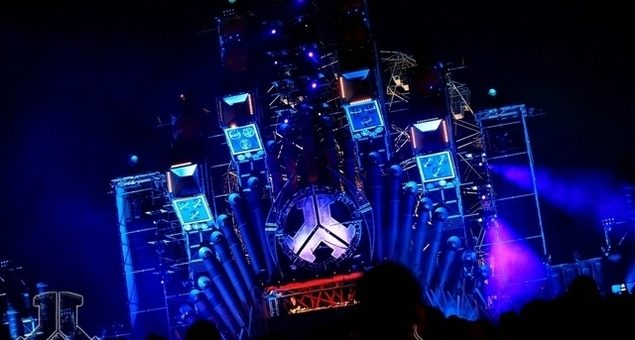

Defqon.1 @ Sydney International Regatta Centre, Sydney (18/09/10)


Missed the epic photo gallery from Defqon.1? Check it out here.
The debut of the Defqon.1 Festival on Australian soil last year arose out of nowhere to become one of our most talked-about dance events ever, something reflected in it taking out the award for ‘Best NSW Event’ in last week’s inthemix50 Awards. The local branch of Q-dance had managed to sell 15,000 tickets on the strength of the Defqon.1 brand alone (the Dutch party sells out 40,000-plus tickets every year within hours of going on sale), but afterwards the word of mouth was strong enough to sell the concept to punters who’d normally dismissively scoff at hard dance.
It’s one of those genres that splits people right down the middle – the hardcore faithful love it to bits, while its detractors loathe it. However, when you’re being faced down by a colossal stage design that’s breathing fire and spitting lasers, all of a sudden everybody ‘gets’ hardstyle. So it was with a pretty hefty reputation already that Defqon.1 returned in 2010.
It was always going to be tough to recreate Defqon.1’s ‘waterside festival’ vibe in Australia, but Q-dance secured themselves an utterly unique venue in the form of the International Regatta Centre. Essentially an artificial island created specifically for the rowing competitions during the 2000 Olympic Games, it’s as if it was actually created especially for the Defqon.1 Festival. Around two kilometres wide with plenty of scenic trees and grassy flats, as well as all the necessary facilities like toilets, grandstands and kiosks, it’s an absolutely stunning venue that makes the trek out to Penrith well worthwhile.
As pristine and ideal as it may be though, that’s not to detract from the organisers’ efforts to transform it into the ideal party space. From the moment you walk through ticket gates and across the bridge onto the island, the attention to detail is apparent – scrap and stylised garbage is plastered everywhere you look, creating a genuine ‘cyber-punk’ vibe that’s consistent across the different spaces. Wrecked cars piled on top of each other, garbage adorning the metal grills, huge seething industrial creatures flanking the many stages – there are too many small details to mention.
Fortunately, this attention to detail also extends to the organisation of the event itself. Immaculate sound everywhere you go, the slightly irritating ‘token’ system paying off in zero queues for alcohol all day, and proper thought put into logistics and crowd movement so the estimated doubling in capacity didn’t lead to punter discomfort. Squeezing so many stages into such a limited space did mean there was the occasional issue with sound bleed, but even this was handled with utmost professionalism.
Walking in from the perimeter to the mainstage for example, it was truly worrying how dead quiet it was. Until you entered the speaker’s cone of influence that is, where it was banging, bass heavy and crisp, at a high volume without hurting the ears, and the acoustics managed perfectly across such a huge space. The woeful production we’ve had to suffer at many Australian festivals over the years would suggest some of our promoters couldn’t care less about details like sound quality and crowd management, but Q-dance have set the standard for the rest to live up to.
Last year the majority of the smaller side stages were found on the west side of the island near the entry, but this year it was reserved for an expanded Blue Stage, with a towering black dome erected among an black expanse of concrete, hosting a posse of international hardstyle heavies like Isaac and The Prophet, alongside local newcomers like The Toneshifterz, who were all given free creative range to pound it out to a considerably smaller crowd than the 20,000 or so gathered at the main stage at its peak. This was the space for the true hardstyle aficionados. Not far away was the Purple Stage, looking out over a pleasant green incline with a consistent crowd for the entire day. This was the space to go and chill and get away from it all, with Soul-T and Karpe-DM in particular throwing down some wickedly groovy hardstyle at sundown.
The event was expanded to take over nearly the entire east section of the island, which housed another two side stages that again boasted impressive crowd numbers from woe to go. The Green Stage was the new addition this year, featuring techno and psytrance from names like Deep as F#ck regular Marcotix, sporting a genuine “bush doof” vibe and catering to those who might not normally be into hardstyle. Walk up the grassy hill a little, and you came to menacing dark, long concave structure that was the Black Stage, the home of hardcore – just about one of the most abrasive styles of music you’ll ever punish your eardrums with. You’re a tough nut if you can handle the blistering BPMs for more than a short amount of time, but it was still a wicked area catering perfectly to one of the more marginalised musical genres. By the time the lasers were turned on after sundown and militant Dutch veteran Promo hit the stage, the intensity was at fever pitch.
The only area that wasn’t really done justice was the Orange Stage, featuring the sounds of hard trance and tech trance, located at what would normally have been prime real estate of the waterside grandstand where punters once watched the rowing take place. In this case the elaborate stage design took up way too much space to leave room for the crowd gathered to see scene stalwarts like Scot Project and Kutski, and the shaking aluminum structure couldn’t handle the booming bass-heavy sounds either. It was a discerning crowd gathered to watch these guys, so it’s a minor gripe for a near-perfect day.
While all of these stages were fun and contributed hugely to the vibe of the festival, at the end of the day it’s all window dressing for the jaw-dropping spectacle of the Red Main Stage. Last year’s towering Defqon.1 logo evoked the glory of a modern day Aztec temple, calling upon thousands of punters to worship at the altar as it beamed colourful light down upon them. This year though, the stage’s significantly expanded footprint resembled more a sinister cyber/industrial structure that could start mowing down the crowd gathered in front of it at any moment.
The same collection of organ pipes and rickety steel pylons flanked grandly by a Ferris Wheel behind it that that we’ve seen in photos from the Dutch event, it looked big enough during the day – but when the sun went down, somehow an optical illusion kicked in to make it look like a towering skyscraper. And when the pyrotechnics were pumped up to the maximum, all scorching flames, piercing spotlights and heavy smoke – it truly was an awesome sight to behold.
Closing the Main Stage this year was Dutchman Willem Rebergen AKA Headhunterz, who has risen out of nowhere in recent years to take centre stage as a force to be reckoned with. To a degree he’s been divisive, with many fiercely resisting his “nu-style” approach of bringing fresh new elements into hardstyle. In some cases this means a more open embrace of melody, but just as often it’s seen him busting open the genre in other innovative ways.
However, when he was wrapping up the mainstage, there was little doubt he’s risen through the ranks for a reason. The set was absolutely captivating, seeing him move through all the hardstyle touchpoints, but also pitching it in all sorts of other directions – including a mind-melt of an industrial broken-beat breakdown at one stage. It was an epic sound that carried the necessary excitement to live up to the spectacle.
There were points where the lighting on the Red Main Stage arguably didn’t do the set-up justice. The detail on last year’s structure was always lit up for maximum ‘wow’ effect, but this year’s much bigger set-up was at times obscured by all the red lighting and thick smoke. The money had certainly been spent; just a slightly more strategic use of the lighting would have offered a more telling look at the foreboding structure that had been erected.
This is barely a gripe though – the insane production was only one element of what made the Defqon.1 Festival so damn good, as it was just as much the thorough approach to organising a large-scale event that made it memorable. But when the fireworks go off in the closing moments, you’d be hard pressed to find a more exhilarating moment in dance culture than that.